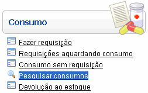
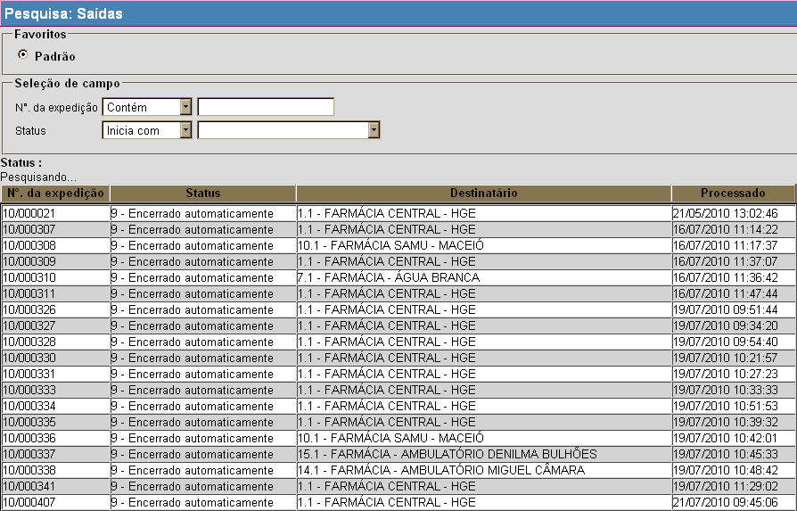
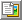
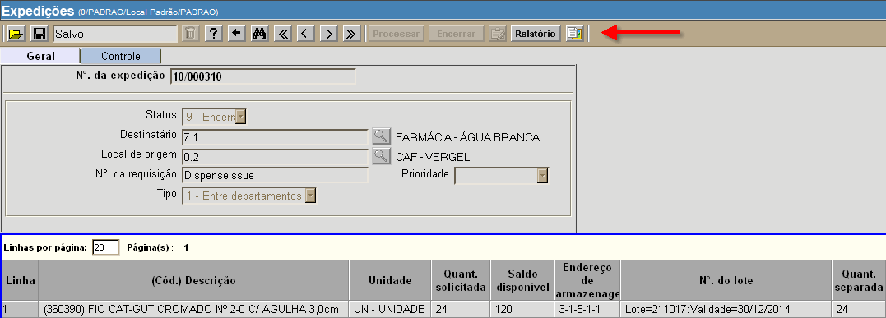
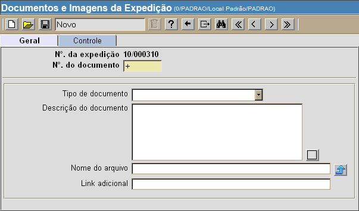
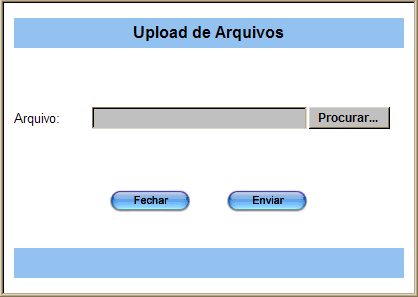

Pesquisar Consumos [ Voltar ]Esta tela pode ser utilizada para pesquisa dos consumos cadastrados no sistema. Para o passo-a-passo de como anexar o comprovante de entrega a um consumo, veja aqui. O formulário "Pesquisar Consumos" se encontra dentro do menu "Consumo". 
Ao clicar no menu "Pesquisar consumos", a seguinte tela será exibida: 
Selecione com um clique o consumo desejado. O usuário será direcionado à tela "Expedição", onde serão exibidas todas as informações do consumo. Observação: para informações sobre como selecionar os filtros da pesquisa, editar favoritos, organizar a tabela de resultado e outras funcionalidades da tela de pesquisa, favor ver a seção Ferramenta de busca, do manual Introdução ao Sistema. Documentos e imagens da expedição [ Voltar ]Siga os passos abaixo para anexar um documento: 1º Passo: abra o formulário "Pesquisar consumos", que se encontra dentro do menu"Consumo". 2° Passo: clique duas vezes no consumo para a qual deseja carregar um documento. Após clicar no consumo, o usuário será direcionado à tela "Detalhes da expedição". 3º Passo: clique no botão  para abrir o formulário "Documentos e imagens da expedição". O botão se encontra no canto superior direito da tela. 
Ao clicar no botão , a seguinte tela será exibida: 
4º Passo: informe na tela os detalhes do comprovante. Selecione o tipo de documento, adicione uma descrição, selecione o arquivo que deseja carregar (upload) e, se necessário, especifique um link adicional da internet ou intranet (www.linkexterno.com/arquivo.pdf, por exemplo). Para selecionar o arquivo para o upload, veja abaixo:

5º Passo: por último, clique no botão  [Salvar] para anexar o
arquivo à expedição. [Salvar] para anexar o
arquivo à expedição. Observação: se desejar carregar outros arquivos, repita os passos 4 e 5 quantas vezes for necessário. |
 [Upload de arquivos] para visualizar a tela de
[Upload de arquivos] para visualizar a tela de